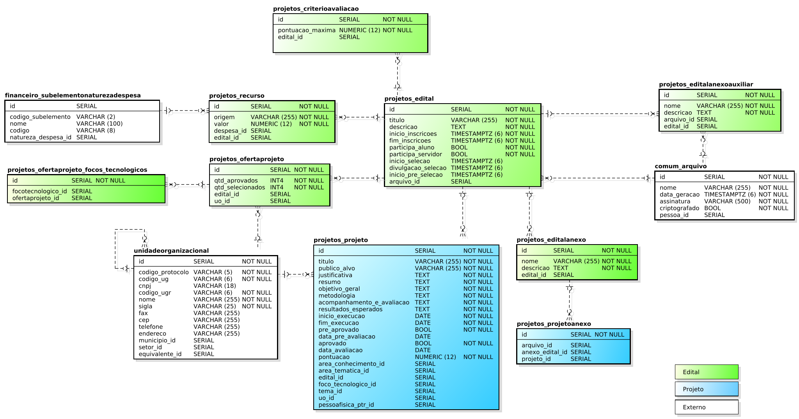

|
IFRN
COORDENAÇÃO DE SISTEMAS DE INFORMAÇÃO (COSINF)/DIGTI/RE
|
|||
|---|---|---|---|---|
PROCESSO DE SOFTWARE PARA A COSINF (COSINF-SUAP) |
||||
Documento de Visão de Produto |
||||
Nome do Projeto: |
Projetos educacionais |
|||
Documento de visão <v0.1>¶
Conteúdo
Histórico da revisão¶
Data |
Versão |
Descrição |
Autor |
|---|---|---|---|
18/03/2014 |
0.1 |
Criação do documento |
Jailton |
02/04/2014 |
0.2 |
Inicio da descrição da visão |
Kelson da Costa Medeiros mailto:kelson.medeiros@ifrn.edu.br |
Introdução¶
Finalidade do documento¶
A finalidade deste documento é especificar os requisitos relevantes do usuários, assim como os limites e restrições evidentes que dão uma visão geral. Essa visão viabiliza a identificação e a produção de documentos e requisitos mais técnicos, assim como do próprio sistema. A visão serve como forma de permitir a compreensão, pelos participantes do projeto, do “o quê e por quê” o projeto existe e provê uma estratégia a partir da qual todas as futuras decisões podem ser validadas.
Finalidade do sistema¶
A finalidade do sistema é a automatização dos processos de proposição, avaliação, aprovação, execução e controle de projetos educacionais, adicionalmente gerenciará a liberação das bolsas aprovadas para os projetos. Os projetos educacionais podem ser de ‘extensão’, ‘pesquisa’ ou ‘inovação’ e o processo é dividido nos marcos ‘edital’, ‘planejamento’, ‘execução’ e ‘encerramento’.
Motivações, necessidades e problemas¶
Nota
Identifique e descreva as possíveis motivações, necessidades e problemas.
Dicas para descrever as necessidades:
Descrição da necessidade;
Qual a solução utilizada atualmente para o atendimento desta necessidade;
Qual seria uma solução proposta para o atendimetno desta necessidade.
Dicas para descrever o problema:
Descrição do problema levantado;
Quais são os interessados afetados pelo problema;
Qual o impacto do problema;
Qual seria uma solução proposta para o problema apresentado.
Projeto da solução¶
Nota
Descreva aqui os elementos do modelo de projeto, que são importantes para a arquitetura, a estrutura de camadas e componentes do projeto, os relacionamentos com outros módulos e a integração com outros sistemas.
Descrição dos papeis¶
Papel das partes interessadas¶
Representante |
Responsabilidades |
|---|---|
Coordenador do PROPI |
Responsável por elencar os requisitos para os projetos educacionais de inovação e pesquisa. |
Papel dos atores¶
Ator |
Sinônimos |
Descrição |
|---|---|---|
Gerente sistêmico |
Pró-reitor de extensão |
Responsável por cadastrar edital e liberar autorização de cadastro de projetos. |
Servidor |
Coordenador de projetos |
Responsável por cadastrar projetos, registrar andamento das atividades nos projetos e registrar conclusão dos projetos. |
Pré-avaliador |
Coordenador de extensão |
Responsável validar as etapas realizadas pelo coordenador de projetos, ou seja, pré-avaliar, validar andamentos das atividades e validar conclusão dos projetos. |
Avaliador |
<Não se aplica> |
Representante da reitoria responsável por avaliar os projetos pré selecionados pelos coordenadores de extensão. |
Visão geral do produto¶
Modelagem de processos de negócio¶
Processo dos projetos educacionais - UML 2.4 (Diagrama de atividades)¶
# |
Fase |
Atividade |
Ator responsável |
Descrição |
|---|---|---|---|---|
1 |
Edital |
Cadastrar edital |
Gerente |
O gerente representa os termos do edital na forma de dados cadastrados no sistema. |
2 |
Planejamento |
Cadastrar projeto |
Servidor |
O servidor submete o projeto para que seja avaliado pelo Coordenador de Projetos. Necessita descrever todos os elementos necessários à avaliação. |
3 |
Planejamento |
Pré-avaliar projeto |
Pré-avaliador |
O Coordenador de projetos avalia os projetos submetidos à sua coordenação (respeitando o campus de sua jurisdição) e, se aprovados, encaminha para avaliação final pelo Avaliador da Reitoria. |
4 |
Planejamento |
Avaliar projeto |
Avaliador |
O Avaliador faz uso da lista de projetos pré avaliados pelos Coordenadores de projetos e, conforme critérios estabelecidos no edital, aprova os aptos, destes, os classificados dentro das vagas oferecidas pelo edital poderão ser executado. |
5 |
Execução |
Registrar atividades |
Servidor |
Os Servidores que tiverem seus projetos aprovados para execução deverão registrar as atividades executadas durante a execução do projeto. |
6 |
Execução |
Validar atividades |
Pré-avaliador |
O Coordenador de projetos deverá aprovar as atividades registradas pelos Servidores para que os repasses financeiros possam ocorrer conforme forem sendo registradas. |
7 |
Encerramento |
Registrar conclusão |
Servidor |
Ao finalizar a execução do projeto o Servidor deverá informar ao Coordenador de projetos os dados necessários para a avaliação final do projeto. |
8 |
Encerramento |
Validar conclusão |
Pré-avaliador |
O Coordenador de projetos recebe a notificação de conclusão de projetos realizadas pelo Servidor, analisa e dá as providências finais ao projeto. |
Requisitos¶
Nota
Descreva os requisitos funcionais e não funcionais do produto. Foi decidido que não haverá divisão entre requisitos funcionais e não funcionais.
Cód |
Descrição |
Categoria |
|---|---|---|
<identificador único do requisito, use R<numero_sequencial>, exemplo R01, R02> |
<descrição> |
<Categoria do requisito> |
Casos de uso¶
Lista de casos de uso¶
Cód - Nome - Versão |
Descrição |
Complexidade |
Requisitos relacionados |
|---|---|---|---|
Cadastrar e manter atualizados os editais de projetos educacionais. |
Normal |
||
Manter atualizada a lista de anexos previstos para os projetos de um edital. |
Normal |
||
Cadastrar e manter atualizados os editais de projetos educacionais. |
Normal |
||
Manter atualizado o cadastro de “Focos tecnológicos”. |
Normal |
||
Cadastrar e manter atualizados os editais de projetos educacionais. |
Normal |
||
Manter atualizado o cadastro de “Focos tecnológicos”. |
Normal |
||
Possibilitar que o servidor (Docente, Pesquisador, Empreendedor) cadastre e submeta seu projeto para avaliação. |
Normal |
||
xxxx |
Normal |
||
Visualizar os dados do projeto, tanto dos dados principais quanto dos dados filhos. |
Normal |
Lista de casos de uso do tipo simples¶
Cód |
Nome |
Descrição |
Complexidade |
Requisitos relacionados |
|---|---|---|---|---|
UC001 |
Focos tecnológicos |
|||
UC002 |
Áreas de conhecimento |
|||
UC003 |
Áreas temáticas |
|||
UC004 |
Temas |
|||
UC005 |
Fundamentação teórica |
|||
UC006 |
Referências bibliográficas |
|||
UC007 |
Grupo de pesquisa |
Diagramas de caso de uso¶
UML 2.4 - Diagrama de caso de uso - Visão do ator ‘Gerente sistêmico’¶
Modelagem de domínio¶
Diagrama de modelagem de domínio¶
Modelo de dados da subprocesso “Edital”
Modelo de dados da subprocesso “Projeto”
Listagem das entidades de domínio¶
Nome |
Descrição |
|---|---|
<Nome físico da tabela> |
<Descrição> |
Cenários de teste¶
Perfil |
Conta |
Usuário |
|---|---|---|
superuser |
1799479 |
Carlos Breno Pereira Silva |
Gerente sistêmico |
1729772 |
Jose Augusto Nascimento de Medeiros |
Servidor + Operador |
1790426 |
Alikson Suel Costa de Oliveira |
Pré-avaliador |
2077349 |
Jose Diego Saraiva da Silva |
Avaliador |
2080882 |
Kelson da Costa Medeiros |
Testar no http://suapdev7.
Questões em aberto¶
Não há.